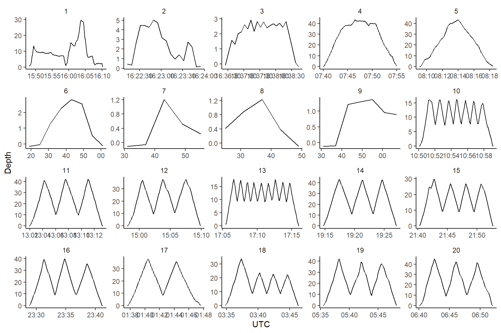

CTD data
2021-11-05
1 SET-UP
CTD data for 2020 were saved every 6 seconds.
source('0.0_settings.R')2 STATION INFO
2.1 READ
If future years have the same file format they can simply be added in the data folder.
# read
files <- dir(dir.icht, pattern = ".xlsx",all.files=FALSE,full.names = TRUE)
load <- lapply(files, read_excel,sheet=2)
info <- do.call("rbind",load)
# exclude the cancelled ones
info <- info[!is.na(info$Heure),]
# format time stuff
info$day <- format(as.POSIXct(info$Date,format='%Y-%m-%d',tz='UTC'),format='%d-%m-%y')
info$time <- format(info$Heure, "%H:%M")
info$duration <- format(info$Duree, "%H:%M")
info$start <- as.POSIXct(paste(info$day,info$time,sep=" "),format='%d-%m-%y %H:%M',tz='UTC') #idem to ctd data
info$end <- info$start+info$`Durée totale (sec)`3 CTD DATA
3.1 READ
If future years have the same file format they can simply be added in the data folder.
files <- dir(dir.ctd, pattern = ".xlsx",all.files=FALSE,full.names = TRUE)
load <- lapply(files, read_excel, sheet=3,skip=3,col_names=FALSE)
col <- lapply(files, read_excel, sheet=3,skip=1,n_max=1,col_names=FALSE)
dummy <- lapply(1:length(load),function(x)(colnames(load[[x]])<<-col[[x]][1,]))
ctd <- do.call("rbind",load)
# reformat date and time
ctd$UTC <- as.POSIXct(ctd$UTC,format='%Y-%m-%d %H:%M:%OS',tz='UTC')
ctd$day <- format(ctd$UTC,format='%d-%m-%y')
ctd$time <- format(ctd$UTC,format='%H:%M:%S')3.2 CUT
There are two methods to determine the start and stop of a CTD cast.
- Use the start and end time as indicated onboard (when the bongo hits the water).
- For this mission this might not have been very precise because we didn’t actually see the bongo go into the water.
- The start time also misses the seconds (just hour and minute)
- By checking the CTD depth and when it starts to plunge.
- An arbitrary rule needs to be defined to detect a plunge. Here I decided that if within ~15 seconds before or after an exact moment in time, there is an observation of a depth >1m, we can assume that we are at a new station and this is a new cast.
So far I only used the second method, assuming that it should be the most precise (error of 15 seconds rather than maybe one minute).
# plunge detection (looking over 5 lines of data or 30 seconds whether in that time frame there is depth>1m)
ctd$station <- rollapply(ctd$Depth,5,function(x)any(x>1),fill=FALSE,align='center')
# only keep station data
ctd.station <- ctd[ctd$station,]
# give a unique id for each station (continuous series)
id <- 1
ctd.station$id <- rollapply(ctd.station$UTC,2,function(x){
d <- difftime(x[2],x[1],units="secs",tz="UTC") # difference in time between two consecutive rows
if(as.numeric(d)!=6)id <<- id+1 # if there are more than 6 seconds between two rows, indicate this is a new cast
return(id)
},align='right',fill=1)3.2.1 PLOT
3.2.1.1 CTD profiles 1-20
Profiles allow to validate, amongst other things, that that the start and end of the cast are reasonably well identified.
ggplot(ctd.station[ctd.station$id %in% 1:20,],aes(x=UTC,y=Depth))+
geom_line()+
facet_wrap(~id,scale='free')
3.2.1.2 CTD profiles 21-40
ggplot(ctd.station[ctd.station$id %in% 21:40,],aes(x=UTC,y=Depth))+
geom_line()+
facet_wrap(~id,scale='free')3.2.1.3 CTD profiles 41-60
ggplot(ctd.station[ctd.station$id %in% 41:60,],aes(x=UTC,y=Depth))+
geom_line()+
facet_wrap(~id,scale='free')3.2.1.4 CTD profiles 61-80
ggplot(ctd.station[ctd.station$id %in% 61:80,],aes(x=UTC,y=Depth))+
geom_line()+
facet_wrap(~id,scale='free')
4 CTD + STATION INFO
4.1 Combine
# only get essential station info
stations <- info[info$`Bab./Trib.`=='T',c('Cons','Station','start','Prof. station (m)')]
# get the start and end of each cast
casts <- ddply(ctd.station,c('id'),summarise,time.start=min(UTC),time.end=max(UTC))
# the cast of the station if the one where the noted down start if within or around the ctd period.
# This does a gradual search of the cast nearest in time.
stations$id <- sapply(stations$start,function(x){
error <- 0
y <- NULL
while(error<(60*120) & length(y)!=1){
y <- which((casts$time.start-error)<x & (casts$time.end+error)>x)
error <- error+60*5
}
return(y)})
stations <- merge(stations,casts,all.x=TRUE)
stations$bottom <- as.numeric(stations$'Prof. station (m)')
# full version
ctd.full <- merge(ctd.station,stations[,c('id','Cons','Station','bottom')])
ctd.full <- ctd.full[order(ctd.full$UTC),]
# data.frame for Melanie
ctd.summary <- ddply(ctd.full,c('Station','Cons','day','bottom'),summarise,
time.start=min(UTC),
time.end=max(UTC),
duration=difftime(max(UTC),min(UTC)),
sst10=mean(TE90[Depth<10]),
depth.ctd=max(Depth))
write.csv(ctd.summary,file='csv/ctd_summary.csv')4.2 PLOTS
4.2.1 Profiles
4.2.1.1 Consecutives 1-22
ggplot(ctd.full[ctd.full$Cons %in% 1:22,], aes(x= UTC,y=Depth)) +
geom_line() +
facet_wrap(~Cons,scale='free')+
scale_y_reverse()4.2.1.2 Consecutives 23-44
ggplot(ctd.full[ctd.full$Cons %in% 23:44,], aes(x= UTC,y=Depth)) +
geom_line() +
facet_wrap(~Cons,scale='free')+
scale_y_reverse()4.2.1.3 Consecutives 45-62
ggplot(ctd.full[ctd.full$Cons %in% 45:62,], aes(x= UTC,y=Depth)) +
geom_line() +
facet_wrap(~Cons,scale='free')+
scale_y_reverse()4.2.2 Temperatures
4.2.2.1 all
ggplot(ctd.full, aes(x=TE90,y=Depth,color=Cons,group=Cons)) +
geom_line() +
scale_y_reverse()4.2.3 Bongo Depth checks
4.2.3.1 Depths
How well did we sample surface-50m?
ggplot(ctd.summary, aes(x=bottom,y=depth.ctd)) +
geom_point()+
geom_text(aes(label=Station),size=2,hjust=-0.1,vjust=-0.1)+
labs(x='Depth of station',y='Max bongo Depth (CTD)')+
geom_abline(slope = 1,intercept=0)+
geom_hline(yintercept=50)
## Warning: Removed 1 rows containing missing values (geom_point).
## Warning: Removed 1 rows containing missing values (geom_text).
4.2.3.2 Depth margin
How far did we stay from the bottom?
ctd.summary$margin <- with(ctd.summary,pmin(bottom,50)-depth.ctd)
ggplot(ctd.summary, aes(x=margin)) +
geom_histogram()+
labs(x='Distance from bottom or 50m (m)')
## `stat_bin()` using `bins = 30`. Pick better value with `binwidth`.
## Warning: Removed 1 rows containing non-finite values (stat_bin).